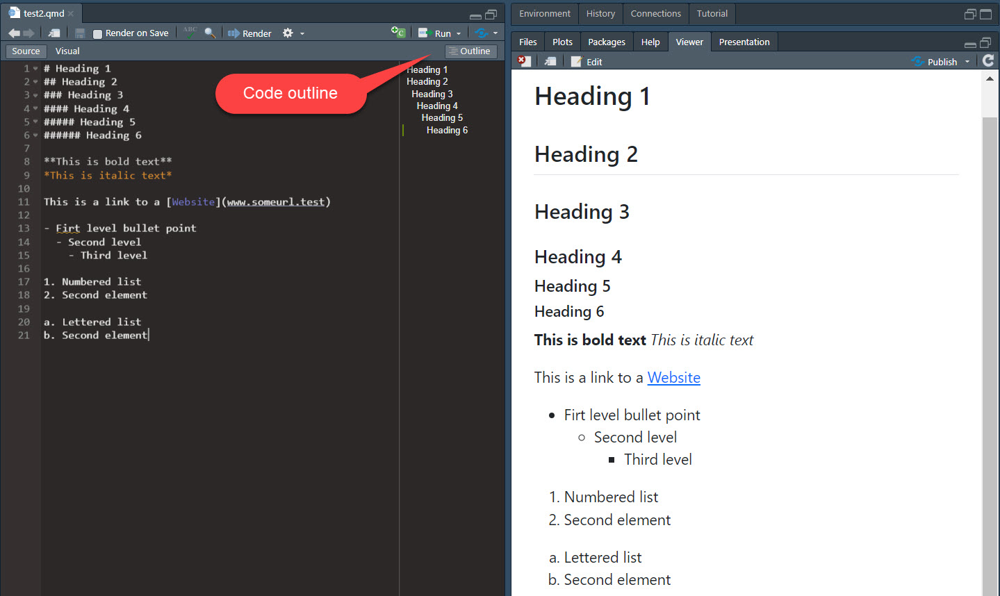
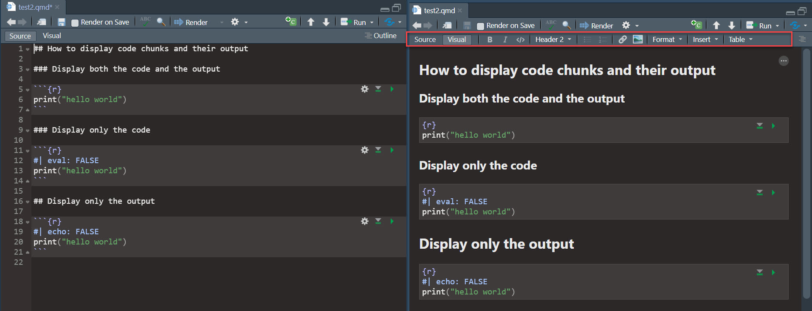

5 Publishing with R
5.1 Learning objectives
- Quarto documents
5.2 Introduction
So far, we have learned how to import data in all kinds of format into R, convert it into a tibble that follow the first two tidy principles (one observation per row, one variable per column), and clean up messy strings with the stringr package. These steps are the 80 in the 80/20 rules of data science, which states that 80% of the time is spent preparing the data, and 20% is spent analyzing it.
We are embarking on our journal to draw insights from the data and write clear and compelling data stories. This chapter introduces Quarto, a suite of tools that will enable you to perform all the data processing AND produce beautiful reports in one simple yet powerful interface: RStudio.
5.3 Quarto documents
So far, we have been working with R scripts (.r files, like the ones we used for Labs 1 to 3). In R scripts, everything is interpreted by R as code unless we specify that we are writing a comment with #. This works fine, and there is no limit to what we can do with these kinds of R scripts regarding data processing and analysis. However, R scripts are not a great tool for making sharing our data stories with the world.
Quarto brings coding, writing, and formatting together by allowing you to write nicely formatted HTML, Word or PDF documents, with embedded chunks of code that are executed to process the data and create beautiful tables and figures for your document. It uses the markdown (https://en.wikipedia.org/wiki/Markdown) syntax. This course website is an example of the type of output that you can produce with Quarto. It’s a Quarto book.
There is a lot that you can do with Quarto that is beyond the scope of this course, but if you want to explore the possibilities, I recommend that you consult the Quarto website, which contains plenty of documentation.
5.3.1 Creating a Quarto document in RStudio
To create a new Quarto document (.qmd), you can click on file, then new file, then select the second option (Quarto Document…). Then RStudio will allow you to provide some information about the document you are creating.
You can select different types of outputs, like documents, presentations, and Shiny applications. In this course, we will use R Markdown to make documents. You can choose to output an HTML document, a PDF document, or a Word document. I recommend sticking with the default (HTML). Word is also a good option if you want to be able to modify the format or add text in Word. The PDF format is awesome but can sometimes be a little buggy as it requires additional packages and a LaTeX installation, so if you are struggling with PDF rendering, I recommend sticking to HTML documents and Word documents for this course.
When you create a new Quarto document, it comes with some content that can get you started with the components of the document and the syntax. This can give you a quick overview of Quarto and the markdown syntax.
5.3.2 Three components of a Quarto document
There are three components to a Quarto document: Metadata, text, and code. All components are optional. So you can write a R Markdown document without metadata, or include only code or text.
5.3.2.1 Metadata
The metadata is located at the top of the Quarto document and is delineated by three dashes --- at the beginning and the end. When you create a new Quarto document in RStudio, the metadata will look like this:
---
title: "My document"
author: "Philippe Mongeon"
format: html
editor: visual
---To change the output type to a PDF or a Word document, we simply need to replace html with docx or pdf. We can also add features such as a table of content and specify where on the page we want it to appear. Note that toc-location does not work for PDFs and Word documents, that always put the table of content in the main body of the document. The number-sections: true numbers sections. Here’s what this looks like.
---
title: "My document"
author: "Philippe Mongeon"
format:
html:
toc: true
toc-location: left
number-sections: true
editor: visual
---Note the html tag was moved to a new line and is now followed by a colon. Also, pay attention to the indentation of the different parts, which is essential to follow. When facing errors, it is always a good idea to fall back on a working example like the one above or to consult the Quarto documentation.
5.3.2.2 Text
Whatever you write after the metadata statement is text, which can be formatted using markdown syntax. Here is an example, with the code on the left and the HTML output on the right.

5.3.2.3 Code
What makes Quarto so great is that we can embed code chunks into our document. We have seen a lot of those code chunks throughout this website so far. They start with three backticks (`) followed by curly brackets with the coding language used in the chunk and end with three backticks.
```{r}
some r code
```
We can also set options for the code chunks to tell R whether to display the code itself, its output, or both. #| echo : FALSE tells R not to display the code in the published document. #| eval : FALSE tells R not to execute the code (so the output of the code will not be displayed in the published document because there will be no output). Here is an example of each option. The code is on the left, and the HTML output is on the right.
Other useful code chunk options are #| message : FALSE, #| warning : FALSE, and #| error : FALSE. Sometimes your code will produce error messages, warnings, or other messages. Typically, we do not want these to show in our documents, so setting these options to FALSE is the way to go.
5.3.3 Visual mode
The visual mode provides an interface and tools to make writing and formatting your Quarto document easier. Here is the same .qmd file edited in normal mode (left) and visual mode (right).

5.3.4 Rendering your document
When you are ready to produce your HTML, Word or PDF document, you click the Render button in RStudio. This will execute all the code and output the HTML, Word or PDF file in your working directory. You can also choose, in the settings, to preview the output in a popup window or the viewer pane (as in the screenshots above).
5.4 Making beautiful tables
A lot of times, we write statements that print tibbles as their output. So part of making beautiful documents is learning how to print our tibbles as nicely formatted tables.
Here are the key rules for table layout proposed by Wilke (2019):
- Do not use vertical lines.
- Do not use horizontal lines between data rows. (Horizontal lines as the separator between the title row and the first data row or as a frame for the entire table are fine.)
- Text columns should be left aligned.
- Number columns should be right-aligned and use the same number of decimal digits throughout.
- Columns containing single characters are centred.
- The header fields are aligned with their data, i.e., the heading for a text column will be left aligned, and the heading for a number column will be right aligned.
- Captions are placed above the table.
5.4.1 the kableExtra package
There are a bunch of popular packages that you can explore to make nice tables. The kableExtra package is very versatile, and I recommend it as a start. You can find all the information you need to fully exploit the package in the official vignette.
The following code uses the kbl() function to print the first 6 rows (this is done with the head() function) of the mpg dataset.
library(kableExtra)
mpg %>%
head() %>%
kbl()| manufacturer | model | displ | year | cyl | trans | drv | cty | hwy | fl | class |
|---|---|---|---|---|---|---|---|---|---|---|
| audi | a4 | 1.8 | 1999 | 4 | auto(l5) | f | 18 | 29 | p | compact |
| audi | a4 | 1.8 | 1999 | 4 | manual(m5) | f | 21 | 29 | p | compact |
| audi | a4 | 2.0 | 2008 | 4 | manual(m6) | f | 20 | 31 | p | compact |
| audi | a4 | 2.0 | 2008 | 4 | auto(av) | f | 21 | 30 | p | compact |
| audi | a4 | 2.8 | 1999 | 6 | auto(l5) | f | 16 | 26 | p | compact |
| audi | a4 | 2.8 | 1999 | 6 | manual(m5) | f | 18 | 26 | p | compact |
As you can see, the table meets most of the criteria listed above. Our table lacks a caption, and the drv column should be centred. We can fix that by using the caption arguments and manually setting the columns’ alignment with the align argument (“l” = left, “r” = right, and “c” = centre).
mpg %>%
head() %>%
kbl(caption = "This is the caption of the table",
align=c("l","l","r","r","r","l","c","r","r","c","l"))| manufacturer | model | displ | year | cyl | trans | drv | cty | hwy | fl | class |
|---|---|---|---|---|---|---|---|---|---|---|
| audi | a4 | 1.8 | 1999 | 4 | auto(l5) | f | 18 | 29 | p | compact |
| audi | a4 | 1.8 | 1999 | 4 | manual(m5) | f | 21 | 29 | p | compact |
| audi | a4 | 2.0 | 2008 | 4 | manual(m6) | f | 20 | 31 | p | compact |
| audi | a4 | 2.0 | 2008 | 4 | auto(av) | f | 21 | 30 | p | compact |
| audi | a4 | 2.8 | 1999 | 6 | auto(l5) | f | 16 | 26 | p | compact |
| audi | a4 | 2.8 | 1999 | 6 | manual(m5) | f | 18 | 26 | p | compact |
The kableExtra package includes some standard themes that you can use to format your tables: kable_classic(), kable_classic_2, kable_minimal(), kable_material(), kable_material_dark(), and kable_paper(). Here’s the same table to which we apply the classic theme.
mpg %>%
head() %>%
kbl(caption = "This is the caption of the table",
align=c("l","l","r","r","r","l","c","r","r","c","l")) %>%
kable_classic()| manufacturer | model | displ | year | cyl | trans | drv | cty | hwy | fl | class |
|---|---|---|---|---|---|---|---|---|---|---|
| audi | a4 | 1.8 | 1999 | 4 | auto(l5) | f | 18 | 29 | p | compact |
| audi | a4 | 1.8 | 1999 | 4 | manual(m5) | f | 21 | 29 | p | compact |
| audi | a4 | 2.0 | 2008 | 4 | manual(m6) | f | 20 | 31 | p | compact |
| audi | a4 | 2.0 | 2008 | 4 | auto(av) | f | 21 | 30 | p | compact |
| audi | a4 | 2.8 | 1999 | 6 | auto(l5) | f | 16 | 26 | p | compact |
| audi | a4 | 2.8 | 1999 | 6 | manual(m5) | f | 18 | 26 | p | compact |
5.4.2 keeping it simple
My main advice with tables is to keep them clean, simple, and informative. Usually, simple tables are enough to convey the message efficiently. If you want to impress with fancy tables, this can certainly be done with kableExtra or some other table packages (an overview of some of the main packages is available on this website).
5.5 Summary
Quarto documents combine the data processing, analysis and reporting elements of the data science workflow in a single location. And the visual tool brings the Quarto document writing experience closer to writing in Word or by hiding the code and letting you visualize the format of your document as you write them.
To get you used to Quarto, we will use it for the remaining course labs. You are also encouraged to use it for your project.